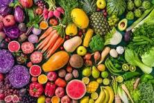

Wild & Wacky Vegetables
Vegetables play an important role in human nutrition. Most are low in fat and calories but are bulky and filling. They supply dietary fiber and are important sources of essential vitamins, minerals, and trace elements. Particularly important are the antioxidant vitamins A, C, and E..
Tom Robbins
Some Diseases
| Veggie | Disease |
|---|---|
| Beets | Beeturia |
| Carrots | Cattotenosis |
Vegetables are a rich source of folate, a B vitamin that helps your body make new red blood cells. Folate is especially important for children's health and may also reduce the risk of cancer and depression.
Vegetables are parts of plants that are consumed by humans or other animals as food. The original meaning is still commonly used and is applied to plants collectively to refer to all edible plant matter, including the flowers, fruits, stems, leaves, roots, and seeds. An alternative definition of the term is applied somewhat arbitrarily, often by culinary and cultural tradition. It may exclude foods derived from some plants that are fruits, flowers, nuts, and cereal grains, but include savoury fruits such as tomatoes and courgettes, flowers such as broccoli, and seeds such as pulses.
 Really Informative Info
Really Informative Info